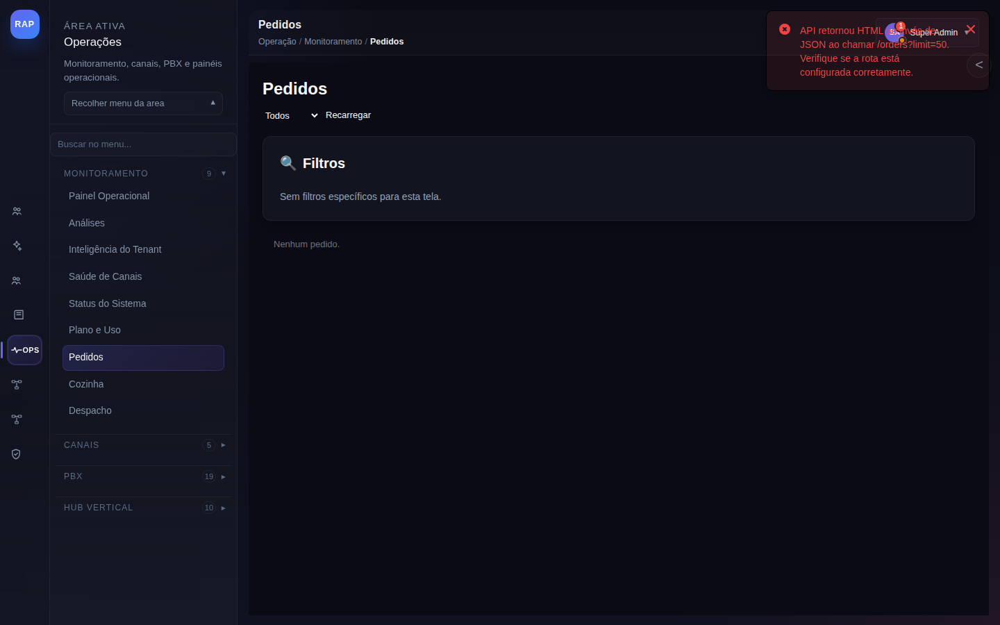
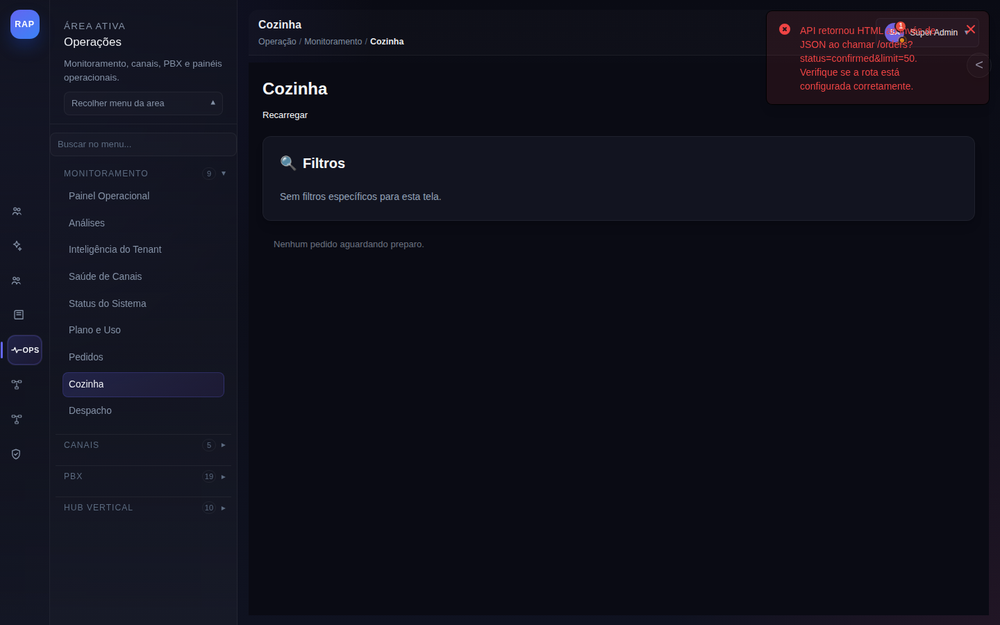
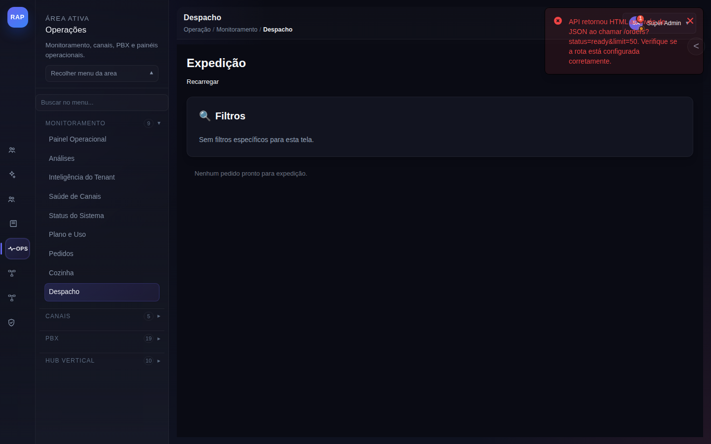

Fluxos anotados para restaurantes, dark kitchens e operações de delivery. Do pedido no WhatsApp à expedição com controle em tempo real.
Fluxo completo de um pedido: recepção no WhatsApp, confirmação pelo atendente ou bot, envio para cozinha e despacho para entrega.
Cliente envia mensagem no WhatsApp com itens do pedido. O bot RAP coleta os itens, confirma o endereço e valor, e cria o pedido no sistema. A cozinha é notificada automaticamente em tempo real via WebSocket.

Item "Pedidos" destacado no menu lateral Operações. Abaixo aparecem "Cozinha" e "Despacho" — os três módulos formam o fluxo completo da jornada de delivery. Clique em cada um para avançar no fluxo.
Header com breadcrumb "Operação / Monitoramento / Pedidos". Confirma que estamos na área de monitoramento operacional. O título muda para "Cozinha" ou "Expedição" nas telas seguintes.
Dropdown que filtra por status do pedido: Todos, Confirmado (aguardando cozinha), Em preparo, Pronto, Despachado, Entregue. Mude para "Confirmado" para ver apenas novos pedidos aguardando.
Força sincronização com o backend. O painel atualiza automaticamente via WebSocket, mas este botão é útil quando há suspeita de latência ou perda de conexão WebSocket.
"Sem filtros específicos para esta tela." — os filtros são dinâmicos e aparecem quando há configurações de tenant específicas (ex.: filtro por unidade, por entregador ou por canal de origem do pedido).
A notificação vermelha indica que a rota de API /orders?status=confirmed&limit=50 retornou HTML ao invés de JSON. Isso ocorre porque a rota de API do tenant ainda precisa ser configurada em /config → Geral. Ver solução abaixo.
Exibido quando não há pedidos com o filtro selecionado. Em operação normal, novos pedidos aparecem aqui em tempo real assim que são criados pelo bot ou atendente no módulo /support.
O toast de erro indica que a integração com o sistema de pedidos do tenant não está configurada. Para resolver: (1) acesse /config → Geral, (2) configure o endpoint base do sistema de pedidos em orders.api_base_url, (3) adicione o token de autenticação em orders.api_token. Após salvar, recarregue a tela de Pedidos e os dados devem aparecer.
Enquanto a integração não está configurada, o atendente pode gerenciar pedidos diretamente em /support: (1) abre a conversa do cliente, (2) confirma os itens e valor, (3) clica em "Criar pedido manual" e (4) encaminha para a cozinha via chat interno. Menos eficiente, mas funcional até a integração ser ativada.

Segundo item do submenu de delivery. Esta tela é geralmente aberta em um tablet ou monitor separado na cozinha, permanecendo em exibição contínua durante o expediente. Não requer login frequente.
Interface da equipe de preparo. Exibe em tempo real os pedidos aguardando preparo em ordem de chegada (FIFO). A equipe não vê o endereço do cliente — apenas os itens do pedido.
O painel de cozinha atualiza via WebSocket automaticamente. O botão "Recarregar" é um fallback manual para ambientes com rede instável. Recomenda-se instalar o painel em rede dedicada (não wifi dos clientes).
Filtros dinâmicos por categoria de produto (ex.: Grelhados, Fritos, Sobremesas) permitem que cozinheiros filtrem apenas seus pedidos quando a cozinha tem estações especializadas.
Estado esperado quando a integração de pedidos não está configurada. Em operação, cada card mostra: número do pedido, itens, observações, tempo decorrido e botão "Marcar como Pronto" que move automaticamente para /dispatch.

Terceiro item do fluxo de delivery. Esta tela é operada pelo despachante ou recepcionista da loja que coordena a saída dos entregadores e monitora pedidos em rota.
Pedidos prontos aguardando designação de entregador. O despachante seleciona o entregador disponível, confirma o endereço e clica "Despachar". O status do pedido muda para "Em rota".
Sincroniza com os pedidos que a cozinha marcou como "Prontos". Qualquer pedido concluído na cozinha aparece aqui em segundos via WebSocket, sem necessidade de recarregar manualmente.
Filtros por entregador, zona de entrega e modal (moto, bicicleta, a pé) permitem otimizar o despacho baseado na localização dos entregadores disponíveis no momento.
Estado limpo esperado quando a integração não está configurada. Em operação normal, cada card mostra: endereço de entrega, tempo estimado, valor do pedido e campos para selecionar o entregador.
Ao despachar, o sistema envia automaticamente ao cliente via WhatsApp: "Seu pedido #[número] saiu para entrega! Previsão: [tempo estimado] min. Pedido total: R$ [valor]." O cliente pode responder para comunicar com o atendente em /support se necessário.
Publicação de novidades no cardápio e campanhas de retorno para clientes que pediram nos últimos 30 dias.
Toda quarta-feira, o operador cria uma campanha de novidade ou promoção do fim de semana. O template WhatsApp (aprovado pela Meta) é disparado para a base de clientes que pediram nos últimos 30 dias entre 11h e 13h.
Use em /bulk-messaging a segmentação "Clientes do Food" → "Pedido nos últimos 30 dias" para garantir que apenas clientes recentes recebam a campanha. Clientes que não pediram há mais de 90 dias recebem a campanha de "Saudades de você" com desconto maior (ex.: 20% no próximo pedido).
Nunca dispare campanhas de Food entre 14h-17h (clientes acabaram de almoçar, propensão baixa) e após 21h (hora do jantar já passou). Os melhores horários são 11h-12h (almoço) e 18h-19h (jantar). Configure o agendamento em /bulk-messaging antes de criar a campanha.